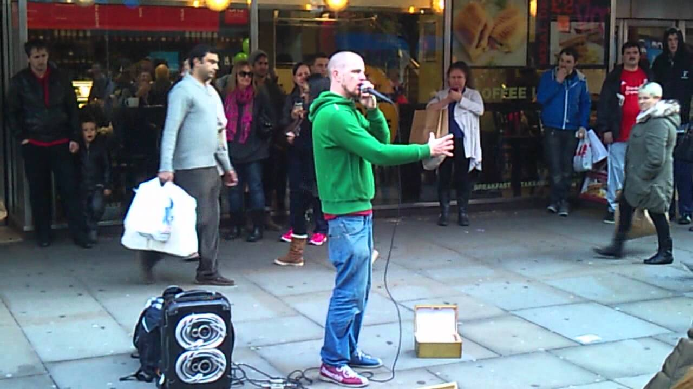
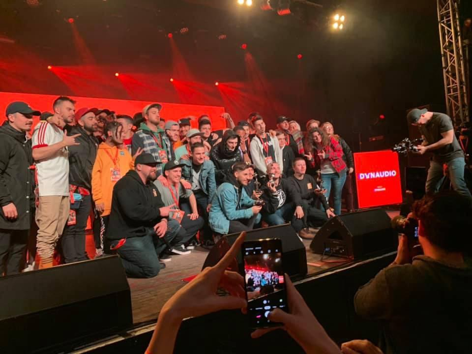

Beatbox
Beatboxról (szájdobolásról) röviden:
A beatbox, (más néven szájdob) a hangoknak az emberi hangképzőszervekkel történő eljátszása.
A hiphopkultúra feltörekvő ötödik eleme. A human beatbox, azaz a szájdob, mint a neve is mutatja, egy zenedoboz hangjainak az ember által képzett hangokkal történő utánzását jelenti. Ez a legegyszerűbb és leglátványosabb módja egy rapzenei alap létrehozásának. Ezek közé tartozik a lábdob a pergődob a cintányér és még megannyi különböző hang.
Az ütemet, a ritmust és a zenei hangokat a szájjal, ajkakkal, nyelvekkel és hangszálakkal idézik elő. A szájdobolás kategóriájába sorolható még a kürt, húros hangszerek, énekhangok és a keverőpult hangjainak szájjal való utánzása is.
Történetéről ízelítő:
Az ütőhangszerek szájjal való utánzása Indiában fejlődött ki több ezer évvel ezelőtt. Kínában a kouji alakult ki, ami szintén egy vokális dobművészet volt. Ezeknek azonban kevés rokon vonása van a hiphoppal, és a mai nyugati beatboxinggel.
A "humán beatbox" az 1970-es években jelent meg New Yorkban, a hiphop zenei stílus egyik elemeként, a rap zenei alapjainak imitálására, ami lehetővé tette, hogy az így létrejött aláfestésre az MC-k (master of ceremony) bárhol freestyle-ozhassanak, azaz szabadon rímeljenek, akár az utcán is.
A beatboxing újra kezd divatba jönni nagyrészt olyan művészeknek köszönhetően, mint Rahzel és Kenny Muhammad, akik hozzásegítettek a műfaj világméretű elterjedéséhez.
Az alábbi videóban egy híresebb beatboxer mutatja be TedX beszédjével milyen is és mi is az a bítboxolás:
Az utcai zenészektől egészen versenyszintig találhatók különböző videók, képek a neten:


Ha többet meg szeretnél tudni a beatbox előfutárairól: Doug E. Fresh, Biz Markie, és Buffy, akik a Fat Boys csapat voltak.
Akkor a történetről többet megtudhatsz a Wikipédián leírtak alapján: